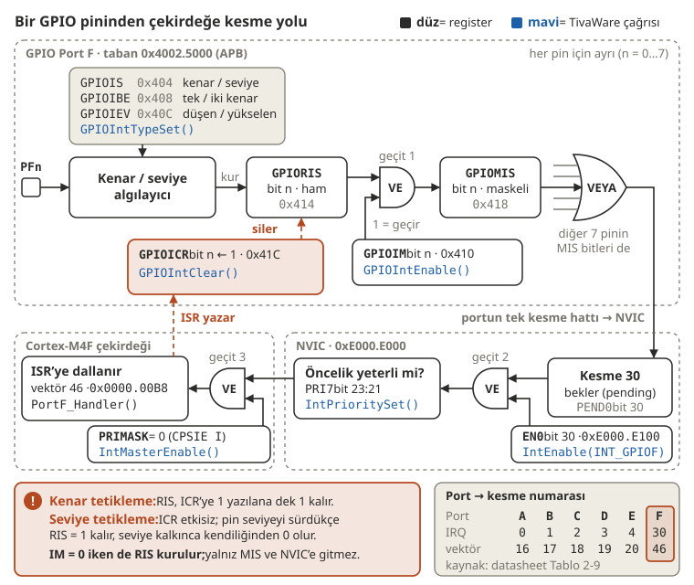
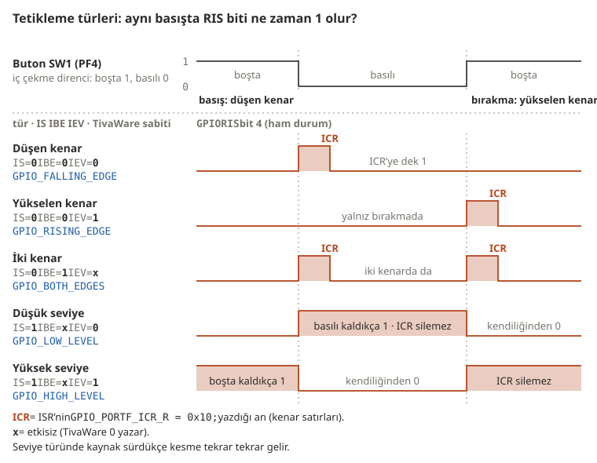
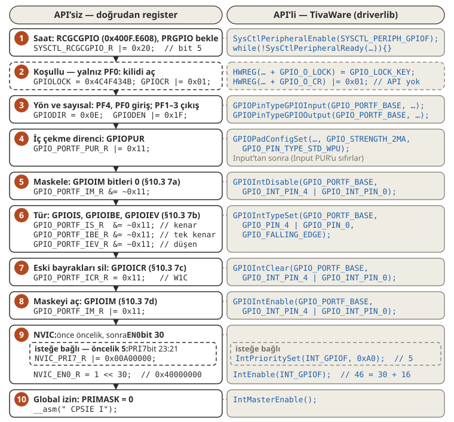
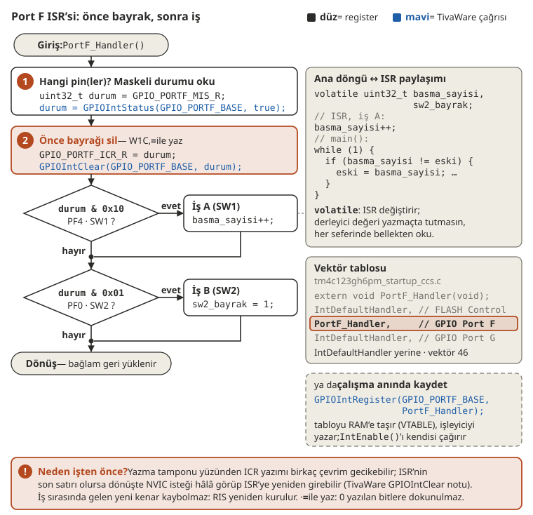
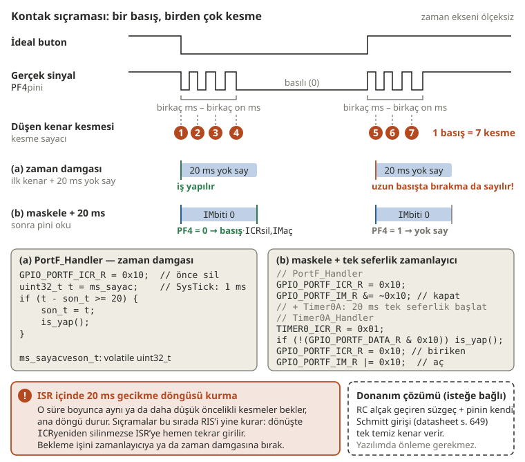

GPIO Kesmeleri
GPIO notunda butonları ana döngüde sürekli okuyorduk. Bu notta aynı butonların bir kenarını donanıma yakalatıp işlemciyi yalnız gerektiğinde çağıracağız. Önce bir pinin kesme yolunu ve register'larını, sonra başlatma sırasını ve ISR yazımını, en sonda da LaunchPad'in SW1/SW2 butonlarıyla API'siz ve API'li örnekleri göreceğiz.
Bu notun sonunda öğrenci:
- Butonu yoklamanın neden basış kaçırdığını ve CPU'yu boşa harcadığını açıklayabilir; bir GPIO olayının ISR'ye ulaşması için açılması gereken üç geçidi (GPIOIM → NVIC EN0 → PRIMASK) sayabilir.
- Bir pinin kesme yolunu (algılama → GPIORIS → GPIOIM → GPIOMIS → port kesmesi → NVIC) çizebilir; Port A–F'nin kesme ve vektör numaralarını (Port F: kesme 30, vektör 46) bulabilir.
- GPIOIS, GPIOIBE ve GPIOIEV ile beş tetikleme türünü (düşen, yükselen, iki kenar, düşük, yüksek seviye) seçebilir; kenar ve seviye tetiklemede GPIOICR'nin etkisini ayırt edebilir.
- Port F kesmesini datasheet sırasıyla başlatabilir: 1 saat → 2 kilit → 3 yön/dijital → 4 pull-up → 5 IM = 0 → 6 IS/IBE/IEV → 7 ICR → 8 IM = 1 → 9 NVIC → 10 global izin.
- ISR'yi startup dosyasına ya da
GPIOIntRegisterile bağlayabilir; ISR içinde GPIOMIS ile pini ayırt edip bayrağı=ile ve en başta temizleyebilir, paylaşılan değişkenlerivolatiletanımlayabilir. - Kontak sıçramasının bir basışta birden çok kesme üretmesini açıklayıp ISR içinde beklemeden sıçramayı önleyebilir.
- Aynı programı doğrudan register erişimiyle ve TivaWare fonksiyonlarıyla (
GPIOIntTypeSet,GPIOIntEnable,GPIOIntClear,GPIOIntStatus,IntEnable,IntMasterEnable) yazabilir.
1. Yoklamadan kesmeye
Butonu yoklamanın sorunu
GPIO notundaki buton örneklerinde (GPIO notu 6.3) program ana döngüde butonun pinini durmadan okuyordu. Buna yoklama (polling) denir. Ders kodlarındaki drive_gpio_interrupt_tekrari klasörü, yoklamadan kesmeye geçişi numaralı dosyalarla adım adım gösterir: 001–003_switch.c SW1/SW2'yi yoklar (003'te LED buton basılı kaldıkça yanar); 004_k.c butonsuz kayan ışıktır; 005_k.c kayan ışığın hızını SW1 (yavaşlat) ve SW2 (hızlandır) ile değiştirir ve sorun burada görülür (005_k_1–6 aynı programı fonksiyonlara böler); 006/007 LED'leri HWREG ve adres maskelemesiyle sürer; 008_main_interrupt.c buton işini kesmeyle yapar, ana döngüsü boştur.
005_k.c'nin ana döngüsü şöyledir (başlatma kısmı GPIO notundaki gibidir):
while(1)
{
if(GPIOPinRead(GPIO_PORTF_BASE, GPIO_PIN_4)==0) // SW1 basılı mı? (turda bir kez bakılır)
{
a=a+50000; // gecikmeyi uzat: ışık yavaşlar
}
if(GPIOPinRead(GPIO_PORTF_BASE, GPIO_PIN_0)==0) // SW2 basılı mı?
{
a=a-50000; // gecikmeyi kısalt
if (a<100001)
a=100000; // alt sınır
}
while (k<9) // kırmızı -> mavi -> yeşil
{
GPIOPinWrite(GPIO_PORTF_BASE, GPIO_PIN_1|GPIO_PIN_2|GPIO_PIN_3, k);
SysCtlDelay(a); // bu sürede butonlara bakılmaz
k=k*2;
}
k=8;
while (k>1) // yeşil -> mavi -> kırmızı
{
GPIOPinWrite(GPIO_PORTF_BASE, GPIO_PIN_1|GPIO_PIN_2|GPIO_PIN_3, k);
SysCtlDelay(a);
k=k/2;
}
k=2;
}Saat 40 MHz'tir (SYSCTL_SYSDIV_5 + PLL) ve SysCtlDelay(n) yaklaşık 3n çevrim sürer. a = 100 000 iken her dilim 7,5 ms, bir tur (6 dilim) 45 ms sürer. SW1 basılı tutulup a = 1 000 000'e çıkınca bir dilim 75 ms, bir tur 450 ms olur. Butonlara turda bir kez bakıldığı için:
- Tur içindeki
SysCtlDelaysırasında yapılan kısa bir basış hiç görülmez. - Basılı tutulan buton her turda yeniden sayılır; bir basış birden çok adım ilerletir.
- CPU zamanının neredeyse tamamı bekleme döngüsünde geçer.
005_k_1.c butonlara daha sık bakar, ama gecikmeler sırasındaki boşluk kalır. Kalıcı çözüm, kenarı donanıma yakalatmaktır. Her GPIO pininin kenar algılayıcısı vardır ve yakaladığı olayı GPIORIS register'ındaki bir bitte, yazılım temizleyene kadar tutar. Bu bit yoklansa bile kısa basış artık kaçmaz; ama asıl kazanç bu bitin işlemciyi kendiliğinden çağırmasıdır: kesme.
Not: 001–008 dosyaları StellarisWare dönemine aittir. GPIO_LOCK_KEY_DD, GPIOPinIntClear gibi eski adlar TivaWare 2.1.4'te yoktur; yeni karşılıkları 8.4'tedir.
Kesmeye kısa giriş: üç geçit
Kesme, bir donanım olayının işlemciyi o anki işinden alıp kesme servis programını (ISR) çalıştırması, ISR bitince de kaldığı yere döndürmesidir. ISR, void Ad(void) biçiminde sıradan bir C fonksiyonudur. Vektör tablosu, flash'ın başındaki (0x0000.0000) bir adres dizisidir; her girişte bir ISR'nin adresi bulunur. Port F'nin girişi vektör 46, yani 0x0B8 ofsetindedir. Kesme gelince çekirdek bu adresi okuyup ISR'ye dallanır, ISR bitince kaldığı yere döner. İstisna/kesme ayrımı, NVIC, öncelikler ve ISR kurallarının ayrıntısı 6. konudaki zamanlayıcı notundadır; burada yalnız GPIO'ya özgü kısmı işliyoruz.
Bir buton kenarının ISR'ye ulaşması için yol üzerindeki üç geçidin de açık olması gerekir:
- Geçit 1, GPIOIM (pin maskesi): İlgili pinin biti 1 olmalı. TivaWare:
GPIOIntEnable(GPIO_PORTF_BASE, GPIO_INT_PIN_4). - Geçit 2, NVIC EN0: Port F'nin kesme numarası 30'dur; EN0'ın (0xE000E100) bit30'u 1 olmalı. TivaWare:
IntEnable(INT_GPIOF). - Geçit 3, PRIMASK: Çekirdeğin bütün kesmeleri tek bitle kapatan maskesi 0 olmalı. Açılış değeri zaten 0'dır. TivaWare:
IntMasterEnable().
Ayrıca ISR'nin adresi vektör tablosunda bulunmalıdır (Bölüm 6). Ders kodlarındaki "beş fonksiyon" kuralı bu yapının TivaWare karşılığıdır: iki global ayar (IntMasterEnable, IntEnable) ve üç çevre birimi ayarı (GPIOIntTypeSet, GPIOIntEnable, GPIOIntRegister).
2. GPIO kesme donanımı
Her portun kesme davranışı yedi register ile yönetilir (datasheet §10.2.2, s. 654–655). Bir pinin yolu Şekil 1'de görülür:

- Algılama: Her pinin kendi algılayıcısı vardır; ne algılanacağını GPIOIS, GPIOIBE ve GPIOIEV'deki aynı numaralı bitler seçer (Bölüm 3).
- Ham durum (GPIORIS): Koşul oluşunca pinin RIS biti 1 olur. Bu bit GPIOIM'den bağımsızdır: maske kapalıyken de kalkar. Açılışta IS = IBE = IEV = 0 olduğundan bütün pinler zaten düşen kenarı algılar; ayar sırasında butona basılırsa ya da pull-up açılmadan önce boşta kalan pin gürültü toplarsa RIS biti önceden 1 olabilir. Başlatmadaki ICR adımı bu yüzden vardır.
- Maske (GPIOIM) ve maskeli durum (GPIOMIS): MIS = RIS VE IM. Yalnız MIS'teki bitler kesme isteği üretir.
- Port kesmesi: Portun sekiz MIS bitinin VEYA'sı tek bir hat olarak NVIC'e gider. Datasheet'in ifadesiyle "tüm port için tek bir kesme çıkışı" vardır (s. 654). PF4 ile PF0 aynı ISR'yi çalıştırır; hangisinin geldiğini ISR, GPIOMIS'i okuyarak bulur.
- Temizleme (GPIOICR): Kenar tetiklemede bit, yazılım GPIOICR'ye 1 yazana kadar 1 kalır. Seviye tetiklemede ise RIS pinin seviyesini izler (aşağıda).
IM biti açık bir pin ADC dönüşümünü (GPIOADCCTL) ya da µDMA aktarımını (GPIODMACTL) da tetikleyebilir (§10.2.2.1–2); bu not yalnız işlemci kesmesini ele alır.
Port başına tek kesme hattı
Her portun NVIC'te ayrı bir girişi vardır. Port F, numara sırasıyla beklenen 5 değil 30'dur; aradaki numaralar başka çevre birimlerine (UART, SSI, I2C, PWM, QEI, ADC, watchdog, zamanlayıcılar, karşılaştırıcılar…) verilmiştir.
| Port | APB taban | Kesme no (EN0 biti) | Vektör no | Vektör ofseti | Öncelik alanı | TivaWare |
|---|---|---|---|---|---|---|
| A | 0x40004000 | 0 | 16 | 0x040 | PRI0 bit7:5 | INT_GPIOA (16) |
| B | 0x40005000 | 1 | 17 | 0x044 | PRI0 bit15:13 | INT_GPIOB (17) |
| C | 0x40006000 | 2 | 18 | 0x048 | PRI0 bit23:21 | INT_GPIOC (18) |
| D | 0x40007000 | 3 | 19 | 0x04C | PRI0 bit31:29 | INT_GPIOD (19) |
| E | 0x40024000 | 4 | 20 | 0x050 | PRI1 bit7:5 | INT_GPIOE (20) |
| F | 0x40025000 | 30 | 46 | 0x0B8 | PRI7 bit23:21 | INT_GPIOF (46) |
Kaynak: datasheet Tablo 2-9 (s. 104–105), s. 658–659, s. 152; inc/hw_ints.h. Vektör no = kesme no + 16, ofset = 4 × vektör no. NVIC register'larında kesme numarası (30), TivaWare'in INT_GPIOF sabitinde vektör numarası (46) kullanılır; IntEnable 46 − 16 = 30 hesabını kendisi yapar.
3. Tetikleme türleri
Pinin hangi olayda RIS bitini kaldıracağını üç register'ın aynı numaralı bitleri belirler (datasheet s. 664–666): GPIOIS 0 = kenar, 1 = seviye; GPIOIBE IS = 0 iken 1 ise her iki kenar (GPIOIEV yok sayılır); GPIOIEV 0 = düşen kenar / düşük seviye, 1 = yükselen kenar / yüksek seviye.
LaunchPad butonları negatif mantıklıdır: iç pull-up ile pin boşta 1, basılıyken 0 okunur (GPIO notu). Bu yüzden basış düşen kenar, bırakma yükselen kenardır (Şekil 2).

| IS | IBE | IEV | Tetikleme | TivaWare sabiti | SW1 için anlamı |
|---|---|---|---|---|---|
| 0 | 0 | 0 | Düşen kenar (1 → 0) | GPIO_FALLING_EDGE (0x0) | basış |
| 0 | 0 | 1 | Yükselen kenar (0 → 1) | GPIO_RISING_EDGE (0x4) | bırakma |
| 0 | 1 | x | İki kenar | GPIO_BOTH_EDGES (0x1) | basış ve bırakma |
| 1 | x | 0 | Düşük seviye | GPIO_LOW_LEVEL (0x2) | basılı tutuldukça |
| 1 | x | 1 | Yüksek seviye | GPIO_HIGH_LEVEL (0x6) | basılmadıkça (sürekli) |
x: etkisiz. TivaWare sabitlerinin bitleri doğrudan register'lara karşılık gelir: bit0 → IBE, bit1 → IS, bit2 → IEV (driverlib/gpio.c, GPIOIntTypeSet). GPIO_FALLING_EDGE = 0 olduğu için bu çağrı üç biti de sıfırlar.
Kenar ve seviye tetikleme
- Kenar tetikleme: Olay bir anlıktır; RIS biti kalkar ve yazılım GPIOICR'ye 1 yazana kadar 1 kalır. ICR yazılmazsa ISR'den dönülür dönülmez aynı kesme yeniden gelir. Butonlar için doğal seçim budur.
- Seviye tetikleme: RIS biti pin seviyesini izler. Kaynak (dış devre), kesme servis edilene kadar seviyeyi korumalıdır; seviye kalkınca RIS kendiliğinden 0 olur. GPIOICR'nin seviye tetiklemede etkisi yoktur (s. 670). ISR kaynağı ortadan kaldırmazsa, örneğin buton hâlâ basılıysa, ISR biter bitmez yeniden girilir ve ana program hiç çalışmaz. Çözüm: ISR içinde IM bitini kapatmak ya da IEV'yi ters seviyeye çevirip bırakmayı beklemek. Seviye tetikleme, isteğini servis edilene kadar tutan kaynaklara (ör. bir dış yonganın kesme çıkışı) uygundur.
Tetikleme ayarı değiştirilirken pinin IM biti kapalı olmalıdır. Datasheet'e göre IM açıkken bu register'lardan birine yazmak sahte bir kesmeye yol açabilir (s. 655); başlatmadaki 5. adım bunun içindir.
4. Register'lar
GPIO kesme register'ları
Ofsetler port taban adresine eklenir (Port F: 0x40025000 + ofset). Hepsinin açılış değeri 0x0000.0000'dır ve bit n pin n'ye karşılık gelir (bit7:0; Port F'de yalnız bit4:0 bağlıdır). Değerler datasheet Tablo 10-6'dan (s. 660):
| Register | Ofset | Tür | Bit = 1 olunca | Port F adresi | s. |
|---|---|---|---|---|---|
| GPIOIS | 0x404 | RW | Seviye algıla (0: kenar) | 0x40025404 | 664 |
| GPIOIBE | 0x408 | RW | İki kenar, IEV yok sayılır (0: IEV belirler) | 0x40025408 | 665 |
| GPIOIEV | 0x40C | RW | Yükselen kenar / yüksek seviye (0: düşen / düşük) | 0x4002540C | 666 |
| GPIOIM | 0x410 | RW | Pinin kesmesi NVIC'e gider (geçit 1) | 0x40025410 | 667 |
| GPIORIS | 0x414 | RO | Pinde kesme koşulu oluştu (IM'den bağımsız) | 0x40025414 | 668 |
| GPIOMIS | 0x418 | RO | RIS VE IM: kesme isteği bu pinden | 0x40025418 | 669 |
| GPIOICR | 0x41C | W1C | 1 yaz: RIS ve MIS bitini temizle (yalnız kenar); 0 yazmak etkisiz | 0x4002541C | 670 |
C adları inc/tm4c123gh6pm.h'de GPIO_PORTF_IS_R … GPIO_PORTF_ICR_R, ofsetler inc/hw_gpio.h'de GPIO_O_IS … GPIO_O_ICR adlarıyla tanımlıdır. GPIORIS ve GPIOMIS'e yazmanın etkisi yoktur. GPIOICR W1C (write-1-to-clear) olduğundan = ile yazılır; |= önce okur ve istenmeyen bayrakları da silebilir (zamanlayıcı notu).
NVIC: EN0, DIS0 ve PRI7
| Register | Adres | Port F için | s. |
|---|---|---|---|
| EN0 (set enable) | 0xE000E100 | bit30 = 1: kesme 30'a izin. 0 yazmak etkisizdir; bu yüzden NVIC_EN0_R = 1 << 30; diğer açık kesmeleri kapatmaz. | 142 |
| DIS0 (clear enable) | 0xE000E180 | bit30 = 1: kesme 30'u kapat (IntDisable(INT_GPIOF)). | 144 |
| PRI7 | 0xE000E41C | Kesme 30 = 4·7 + 2 → alan bit23:21. 0 en yüksek, 7 en düşük öncelik; açılışta 0. | 152 |
Örneğin öncelik 5 için NVIC_PRI7_R = (NVIC_PRI7_R & 0xFF1FFFFF) | (5 << 21); ya da IntPrioritySet(INT_GPIOF, 5 << 5); yazılır (IntPrioritySet değerin üst 3 bitini kullanır; 5 << 5 = 0xA0). inc/tm4c123gh6pm.h bu alan için NVIC_PRI7_INT30_M (0x00E00000) ve NVIC_PRI7_INT30_S (21) sabitlerini de verir. Öncelik kurallarının ayrıntısı 6. konudaki zamanlayıcı notundadır; tek kesmeli programda öncelik ayarı gerekmez.
5. Başlatma adımları
Datasheet §10.3 (s. 656–657) GPIO başlatmasını sıralar; 7. adımı kesme ayarıdır ve sahte kesmeyi önlemek için dört alt adım verir: (a) IM'i temizle, (b) IS ve IBE'yi ayarla, (c) GPIORIS'i temizle, (d) IM'i aç. GPIORIS salt okunur olduğundan (c) adımı pratikte GPIOICR'ye 1 yazılarak yapılır. NVIC ve global izin adımları kesme altyapısından gelir. Şekil 3 iki yolu yan yana gösterir:

Adım adım
- Saati aç: RCGCGPIO bit5 = 1, PRGPIO bit5'i bekle.
- Kilidi aç (yalnız PF0/SW2 kullanılacaksa): GPIOLOCK = 0x4C4F434B, GPIOCR bit0 = 1 (GPIO notu).
- Yön ve dijital işlev: GPIODIR'de LED pinleri 1, buton pinleri 0; GPIODEN'de hepsi 1.
- Pull-up: Buton pinlerinde GPIOPUR = 1. Unutulursa pin boşta kalır (Bölüm 10).
- Pin kesmesini maskele (7a): GPIOIM'de ilgili bit = 0 (açılışta zaten 0; ayar sonradan değişiyorsa şart).
- Tetikleme türü (7b): GPIOIS, GPIOIBE, GPIOIEV (Bölüm 3).
- Bekleyen bayrağı temizle (7c): GPIOICR = pin biti; ayar sırasında kalkmış bir RIS biti sahte kesmeye yol açmasın.
- Pin kesmesine izin ver (7d, geçit 1): GPIOIM'de ilgili bit = 1.
GPIOIntRegisterNVIC iznini (EN0) de verdiği için, IM açılmadan önce çağrılırsa ilk kesme doğru ISR'ye gider; sonra çağrılırsa arada gelen bir kesme startup'takiIntDefaultHandler'a düşer. - NVIC (geçit 2): İsteğe bağlı öncelik PRI7 bit23:21; ardından EN0 bit30 = 1. ISR vektör tablosuna bağlı olmalıdır (Bölüm 6).
- Global izin (geçit 3): PRIMASK = 0 (
IntMasterEnable()ya da__asm(" cpsie i");). Açılış değeri 0 olduğu için çoğu API'siz örnekte yazılmaz.
Her adımın register ve TivaWare karşılığı Şekil 3'te yan yanadır; adımların tamamı API'siz olarak 8.1'de, API'li olarak 8.4'teki iki kenar örneğinde kullanılmıştır.
TivaWare karşılıkları
Davranışlar TivaWare 2.1.4 kaynak kodundan (driverlib/gpio.c, driverlib/interrupt.c) doğrulanmıştır.
| TivaWare çağrısı | Ne yapar (register düzeyinde) |
|---|---|
GPIOIntDisable(base, flags) | GPIOIM &= ~flags (adım 5). |
GPIOIntTypeSet(base, pins, tür) | Seçilen pinlerin IBE, IS ve IEV bitlerini türün bit0, bit1, bit2'sine göre 1 ya da 0 yapar (adım 6). IM'e dokunmaz. |
GPIOIntClear(base, flags) | GPIOICR = flags (adım 7 ve ISR). Atama ile yazar, |= ile değil. |
GPIOIntEnable(base, flags) | GPIOIM |= flags (adım 8). flags için GPIO_INT_PIN_n sabitleri kullanılır; değerleri GPIO_PIN_n ile aynıdır (0x01 … 0x80), bu yüzden ders kodlarındaki GPIO_PIN_4 da doğru çalışır. |
GPIOIntStatus(base, true) | GPIOMIS'i döndürür; false verilirse GPIORIS'i (IM biti 0 olan pinler dahil). |
GPIOIntRegister(base, f) | IntRegister(INT_GPIOF, f) ile vektör tablosunu RAM'e kopyalayıp 46. girişe f'yi yazar, ardından IntEnable(INT_GPIOF)'yi çağırır (adım 9'un EN0 kısmı). IM'i açmaz; pin kesmeleri ayrıca GPIOIntEnable ile açılır. |
IntEnable(INT_GPIOF) | EN0'da bit (46 − 16) = 30 (adım 9). |
IntMasterEnable() | CPSIE I: PRIMASK = 0 (adım 10). |
GPIOPadConfigSet(base, pins, GPIO_STRENGTH_2MA, GPIO_PIN_TYPE_STD_WPU) | GPIOPUR bitlerini 1 yapar (adım 4). GPIOPinTypeGPIOInput pad'i GPIO_PIN_TYPE_STD'ye, yani pull-up kapalıya ayarladığı için bu çağrı ondan sonra yapılmalıdır. |
6. ISR yazımı
ISR'yi vektör tablosuna bağlamak
İki yol vardır; ayrıntısı 6. konudaki zamanlayıcı notundadır.
Yöntem 1, startup dosyası (statik): CCS projesindeki tm4c123gh6pm_startup_ccs.c dosyasında ISR adı extern ile bildirilir ve g_pfnVectors dizisinin "GPIO Port F" yorumlu satırında IntDefaultHandler yerine yazılır. API'siz örnek hafta06GpioApsiziKEsme'deki iki değişiklik:
extern void _c_int00(void);
extern void haricikesme(void); // (1) EKLENDİ: ISR main.c'de tanımlı
void (* const g_pfnVectors[])(void) =
{
/* ... vektör 0-19 ... */
IntDefaultHandler, // vektör 20, 0x050: GPIO Port E (kesme 4)
/* ... */
IntDefaultHandler, // vektör 45, 0x0B4: FLASH Control (kesme 29)
haricikesme, // vektör 46, 0x0B8: GPIO Port F (kesme 30) (2) DEĞİŞTİ
IntDefaultHandler, // vektör 47: GPIO Port G (bu yongada yok)
/* ... */
};Satır, yorumdaki adla bulunur; satır saymak hataya açıktır. Bildirim eksikse derleme hata verir; ad yazılmazsa ilk kesmede işlemci IntDefaultHandler'daki sonsuz döngüye düşer ve program donmuş görünür.
Yöntem 2, GPIOIntRegister (dinamik): Startup dosyasına dokunulmaz; tablo çalışma anında RAM'e kopyalanır. Ders kodlarındaki API'li örneklerin çoğu bu yolu, API'siz örnekler ve drive_gpio_interrupt_example birinci yolu kullanır.
ISR gövdesi: MIS, ICR ve volatile
Port F'nin sekiz pini tek ISR'yi paylaştığı için ISR'nin akışı hep aynıdır (Şekil 4):

= ile yaz → hangi pin (PF4 / PF0) → kısa işi yap ve dön. ISR ile ana döngü arasındaki bilgi volatile bir global değişkenle taşınır.#include <stdint.h>
#include "inc/tm4c123gh6pm.h"
volatile uint32_t basma_sayisi = 0; // ISR artırır, ana döngü okur
volatile uint32_t sw2_bayrak = 0; // ISR kaldırır, ana döngü işleyip indirir
void PortF_Handler(void)
{
uint32_t durum = GPIO_PORTF_MIS_R; // hangi pin(ler)? bir kez oku
GPIO_PORTF_ICR_R = durum; // yalnız gelen bayrakları temizle, en başta
if (durum & 0x10) // SW1 (PF4): bit testi, '==' değil
basma_sayisi++;
if (durum & 0x01) // SW2 (PF0)
sw2_bayrak = 1;
}- GPIOMIS'i bir kez oku, bit testi yap. İki butona aynı anda basılmışsa MIS = 0x11 olur.
if (durum == 0x10)gibi eşitlik testi bu durumda iki dalı da kaçırır;if (durum & 0x10)doğrudur. GPIORIS değil GPIOMIS okunur: RIS'te IM'i kapalı pinlerin bitleri de görünebilir. - Bayrağı
=ile ve en başta temizle. Yalnız işlenen pinlerin bitleri yazılır. Yazma tamponu yüzünden son satırda temizlenen bayrak NVIC'e geç ulaşır ve ISR bir kez daha çalışabilir;GPIOIntClear'ın TivaWare açıklaması da başta temizlemeyi önerir (ISR kuralları, kural 2). - Kısa tut, paylaşılanı
volatileyap. ISR'deSysCtlDelayya da bırakmayı bekleme olmaz; uzun işi ana döngü yapar.volatileolmayan değişkeni derleyici yazmaçta tutup ISR'nin değişikliğini görmeyebilir.
7. Kontak sıçraması
Mekanik bir buton kapanırken ve açılırken kontaklar birkaç ms – birkaç on ms (butona göre değişir) sıçrar: pin, kararlı seviyeye oturmadan önce birkaç kez 0 ile 1 arasında gidip gelir. Kenar tetiklemeli algılayıcı bu geçişlerin her birini ayrı bir kenar sayar; bir basış birden çok kesme üretir (Şekil 5). 8.1'deki LED tersleme örneğinde LED bazen hiç değişmiyormuş gibi görünür: çift sayıda tersleme olmuştur. GPIO girişlerinin Schmitt tetikleyicisi (datasheet s. 649) yavaş kenarlardaki gürültüyü giderir, ama mekanik sıçramayı gidermez.

- ISR içinde beklemek (kötü): Bekleme süresince eşit ve düşük öncelikli bütün kesmeler bekler. Üstelik bayrak başta temizlendiyse bekleme sırasındaki sıçrama kenarları RIS'i yeniden kaldırır ve ISR döner dönmez tekrar çalışır. Ders kodlarındaki
SysCtlDelay'li ISR'lerin (8.2) LED'i bazen iki kez yakmasının nedeni budur. - (b) Maskele ve 20 ms sonra oku (Şekil 5): ISR pinin IM bitini kapatır; 20 ms sonra (ana döngüde, 8.6, ya da tek seferlik zamanlayıcı kesmesinde) pin hâlâ 0 ise basış kabul edilir, ICR temizlenip IM açılır.
- (a) Zaman damgası (Şekil 5): ISR, SysTick ya da bir zamanlayıcıdan okunan zamana göre son kabul edilen kenardan beri 20 ms geçmemişse kenarı yok sayar. Uzun basışta bırakma sıçramasının düşen kenarı yeni basış sayılabilir; güvenilir yol (b) yöntemi ya da iki kenarda zaman damgası tutmaktır.
- Periyodik örnekleme: GPIO kesmesi yerine 5–10 ms'lik bir zamanlayıcı kesmesi pini okur, art arda birkaç aynı okumadan sonra değişikliği kabul eder.
- Donanımsal: RC süzgeç (seri direnç + butona paralel kondansatör) kenarı yavaşlatır, pinin kendi Schmitt girişi (s. 649) bunu tek temiz kenara çevirir.
8. Örnekler
Ders kodlarından alınan örneklerde mantık değiştirilmemiştir; İngilizce yorum blokları ve yoruma alınmış satırlar atılmış, yorumlar Türkçeleştirilmiştir. Yorumlardaki adım numaraları Bölüm 5'tekilerdir. "Bu not için hazırlandı" diye işaretlenen kodlar ders klasöründe yoktur ve TivaWare 2.1.4 başlıklarıyla uyarısız derlenmiştir. Proje ayarları (include yolu, stdint.h sırası, PART_TM4C123GH6PM) zamanlayıcı notundaki gibidir.
8.1 SW1 ile LED tersleme, API'siz
Amaç: SW1'e (PF4) her basışta kırmızı LED'in (PF1) durumunu değiştirmek; ana döngü boş kalır. Donanım: LaunchPad, SW1 = PF4 (iç pull-up), kırmızı LED = PF1. Ayrıca startup dosyasında "GPIO Port F" satırına PortF_Handler yazılır ve extern void PortF_Handler(void); eklenir.
#include <stdint.h> // tm4c123gh6pm.h uint32_t kullanır; önce eklenmeli
#include "inc/tm4c123gh6pm.h"
void PortF_Handler(void) // kesme 30 / vektör 46: startup dosyasına yazılır
{
GPIO_PORTF_ICR_R = 0x10; // PF4 bayrağını temizle (W1C: '=' ile, en başta)
GPIO_PORTF_DATA_R ^= 0x02; // kırmızı LED'i (PF1) tersle
}
int main(void)
{
SYSCTL_RCGCGPIO_R |= 0x20; // 1) Port F saati
while ((SYSCTL_PRGPIO_R & 0x20) == 0) {} // Port F hazır olana kadar bekle
GPIO_PORTF_DIR_R |= 0x02; // 3) PF1 çıkış
GPIO_PORTF_DIR_R &= ~0x10; // PF4 giriş
GPIO_PORTF_DEN_R |= 0x12; // PF1 ve PF4 dijital
GPIO_PORTF_PUR_R |= 0x10; // 4) PF4 iç pull-up (SW1 negatif mantık)
GPIO_PORTF_IM_R &= ~0x10; // 5) PF4 kesmesini maskele
GPIO_PORTF_IS_R &= ~0x10; // 6) IS = 0: kenar duyarlı
GPIO_PORTF_IBE_R &= ~0x10; // IBE = 0: tek kenar, IEV belirler
GPIO_PORTF_IEV_R &= ~0x10; // IEV = 0: düşen kenar (basış)
GPIO_PORTF_ICR_R = 0x10; // 7) bekleyen bayrağı temizle
GPIO_PORTF_IM_R |= 0x10; // 8) PF4 kesmesine izin (geçit 1)
NVIC_PRI7_R = (NVIC_PRI7_R & 0xFF1FFFFF) | (5 << 21); // 9) kesme 30 önceliği = 5 (isteğe bağlı)
NVIC_EN0_R = 1 << 30; // 9) NVIC: kesme 30 (geçit 2)
__asm(" cpsie i"); // 10) PRIMASK = 0 (geçit 3)
while (1)
{
/* boş: LED'i ISR değiştiriyor */
}
}Açıklama: On adımın 2. adımı (kilit) PF0 kullanılmadığı için yoktur. Saat 16 MHz'tir (PIOSC), ama kesmeli bu programda süre hesabı yoktur. Sıçrama yüzünden LED bazen değişmiyormuş gibi görünebilir (Bölüm 7).
8.2 SW1 kesmesi, API'li
Amaç: SW1'in düşen kenarında kırmızı LED'i kısa süre yakmak; ders kodlarında "beş fonksiyon" diye anılan düzen. Donanım: SW1 = PF4, kırmızı LED = PF1; ISR GPIOIntRegister ile bağlanır, startup dosyası değişmez. drive_2017_gpio_int/int1.c bu dosyayla aynıdır (yalnız yorumlar farklı).
#include <stdint.h>
#include <stdbool.h>
#include "inc/hw_types.h"
#include "inc/hw_memmap.h"
#include "driverlib/sysctl.h"
#include "driverlib/gpio.h"
#include "inc/hw_gpio.h"
#include "inc/hw_ints.h"
#include "inc/hw_sysctl.h"
void portfkesmesifonksiyonu()
{
GPIOIntClear(GPIO_PORTF_BASE, GPIO_PIN_4); // PF4 bayrağını temizle
GPIOPinWrite(GPIO_PORTF_BASE, GPIO_PIN_1|GPIO_PIN_2|GPIO_PIN_3, 2); // kırmızı yan
SysCtlDelay(2000000); // ISR içinde ~0,12 s bekleme
GPIOPinWrite(GPIO_PORTF_BASE, GPIO_PIN_1|GPIO_PIN_2|GPIO_PIN_3, 0); // sön
}
int main(void)
{
// kesmede her zaman 5 fonksiyon ile ayar yapacağız
IntMasterEnable(); // global ayar 1 (adım 10)
SysCtlClockSet(SYSCTL_SYSDIV_4|SYSCTL_USE_PLL|SYSCTL_XTAL_16MHZ|SYSCTL_OSC_MAIN); // 50 MHz
SysCtlPeripheralEnable(SYSCTL_PERIPH_GPIOF); // 1)
GPIOPinTypeGPIOOutput(GPIO_PORTF_BASE, GPIO_PIN_1|GPIO_PIN_2|GPIO_PIN_3); // 3)
GPIOPinTypeGPIOInput(GPIO_PORTF_BASE, GPIO_PIN_4); // 3)
GPIOPadConfigSet(GPIO_PORTF_BASE, GPIO_PIN_4, GPIO_STRENGTH_4MA, GPIO_PIN_TYPE_STD_WPU); // 4)
GPIOIntRegister(GPIO_PORTF_BASE,portfkesmesifonksiyonu); // çevre birimi ayar 1: ISR (+ adım 9)
GPIOIntTypeSet(GPIO_PORTF_BASE, GPIO_PIN_4,GPIO_FALLING_EDGE); // çevre birimi ayar 2 (adım 6)
GPIOIntClear(GPIO_PORTF_BASE, GPIO_PIN_4); // 7)
GPIOIntEnable(GPIO_PORTF_BASE, GPIO_PIN_4); // çevre birimi ayar 3 (adım 8)
IntEnable(INT_GPIOF); // global ayar 2 (adım 9)
GPIOPinWrite(GPIO_PORTF_BASE, GPIO_PIN_1|GPIO_PIN_2|GPIO_PIN_3, 0); // LED'ler sönük
while(1)
{
}
}Açıklama: Sıra Bölüm 5'tekinden farklıdır (global izin en başta), ama IM en son açıldığı için sonuç değişmez. 008_main_interrupt.c ve dersin LaTeX notundaki ilk kesme örneği aynı işi StellarisWare adlarıyla (GPIOPinIntClear, GPIOPinIntEnable), 40 MHz'te ve ISR kaydını sona alarak yapar.
- Dosya
driverlib/interrupt.h'yi eklemez;IntMasterEnableveIntEnablebildirimsiz çağrılır. CCS'deki TI derleyicisi bunu yalnız uyarıyla (#225-D) geçirir; C99'dan beri örtük bildirim yoktur ve güncel GCC/clang varsayılan olarak hata verir.#include "driverlib/interrupt.h"eklenmelidir. Aynı eksikint2.c'de de vardır;int3.c–int5.cbu satırı içerir. - ISR'de
SysCtlDelay(2000000);vardır: 50 MHz'te yaklaşık 0,12 s boyunca diğer kesmeler bekler ve bu sürede gelen sıçrama kenarları ISR'yi bir kez daha çalıştırabilir (Bölüm 7).
8.3 İki buton, MIS ile ayırt etme
Amaç: SW1 (PF4) ve SW2 (PF0) aynı Port F ISR'sini çalıştırır; ISR, GPIOMIS ile hangi butona basıldığını bulur. Donanım: SW1, SW2 (PF0 kilitli: GPIO notu), RGB LED.
API'siz
ISR adı haricikesme, startup dosyasına Bölüm 6'daki gibi yazılmıştır. SW1 mavi, SW2 kırmızı LED'i yakar; LED'ler hiç söndürülmez, iki butona da basıldıktan sonra mor kalır.
#include "stdint.h"
#include"inc/tm4c123gh6pm.h"
void haricikesme(void) // Port F ISR (startup'ta vektör 46)
{
if ((GPIO_PORTF_MIS_R & 0x10)) // SW1 (PF4) kesmesi mi?
{
GPIO_PORTF_ICR_R=0x10; // PF4 bayrağını temizle
GPIO_PORTF_DATA_R|=0x04; // mavi LED'i yak
}
if ((GPIO_PORTF_MIS_R & 0x01)) // SW2 (PF0) kesmesi mi?
{
GPIO_PORTF_ICR_R=0x01; // PF0 bayrağını temizle
GPIO_PORTF_DATA_R|=0x02; // kırmızı LED'i yak
}
}
int main(void)
{
SYSCTL_RCGCGPIO_R|=(1<<5); // 1) Port F saati (0x20)
GPIO_PORTF_LOCK_R = 0x4C4F434B; // 2) kilidi aç
GPIO_PORTF_CR_R = 0x01; // PF0 artık değiştirilebilir
GPIO_PORTF_DIR_R &= ~(1<<4)|~(1<<0); // 3) amaç: PF4, PF0 giriş (uyarıya bakın)
GPIO_PORTF_DIR_R |=(1<<3)|(1<<2)|(1<<1);// PF1-PF3 çıkış
GPIO_PORTF_AFSEL_R=0x00; // alternatif işlev yok
GPIO_PORTF_DEN_R|=(1<<4)|(1<<3)|(1<<2)|(1<<1)|(1<<0); // PF0-PF4 dijital
GPIO_PORTF_PUR_R =(1<<4)|(1<<0); // 4) PF4, PF0 pull-up
GPIO_PORTF_IS_R &=~(1<<4)|~(1<<0); // 6) amaç: kenar duyarlı
GPIO_PORTF_IBE_R &=~(1<<4)|~(1<<0); // amaç: tek kenar (IEV belirler)
GPIO_PORTF_IEV_R &=~(1<<4)|~(1<<0); // amaç: düşen kenar
GPIO_PORTF_ICR_R |=(1<<4)|(1<<0); // 7) bayrakları temizle
GPIO_PORTF_RIS_R=0x00; // RIS salt okunur: etkisiz
GPIO_PORTF_IM_R|=(1<<4)|(1<<0); // 8) PF4, PF0 kesmesine izin
NVIC_EN0_R=0x40000000; // 9) NVIC kesme 30 (8051'deki SETB EX0 karşılığı)
while(1)
{
}
}GPIO_PORTF_DIR_R &= ~(1<<4)|~(1<<0);ve IS, IBE, IEV için aynı biçimdeki satırlar hiçbir biti temizlemez:~0x10 | ~0x01=0xFFFFFFEF | 0xFFFFFFFE=0xFFFFFFFF, yani register kendisiyle VE'lenir. Program yalnız bu register'ların açılış değeri 0 olduğu için çalışır. Doğrusu:&= ~((1<<4)|(1<<0));ya da&= ~0x11;.GPIO_PORTF_ICR_R |=(1<<4)|(1<<0);: W1C register'ına=ile yazılmalıdır.GPIO_PORTF_RIS_R=0x00;: GPIORIS salt okunurdur, bu satırın etkisi yoktur. Datasheet'in "GPIORIS'i temizle" adımı GPIOICR ile yapılır.- Özgün yorum PF1–PF3 için "input oldu" der; bu pinler çıkıştır.
- PRGPIO beklenmeden
GPIO_PORTF_LOCK_R'ye yazılır; datasheet saatten sonra 3 çevrim ister (s. 659).
Ders klasöründeki uzun örnek aynı programdır (datasheet açıklamaları yorum olarak eklenmiş); yukarıdaki uyarılar onun için de geçerlidir.
API'li
SW1 kırmızı, SW2 mavi LED'i kısa süre yakar. Include satırları int1.c'dekilerle aynıdır, ek olarak driverlib/interrupt.h vardır; başlatmanın 1–4. adımları kısaltılmıştır.
void kesmefonksiyonu(void)
{
int a;
a=GPIOIntStatus(GPIO_PORTF_BASE, true); // GPIOMIS: hangi pin(ler)?
GPIOIntClear(GPIO_PORTF_BASE, GPIO_PIN_0|GPIO_PIN_4); // iki bayrağı da en başta temizle
if (a==16) // yalnız PF4 (SW1)
{
GPIOPinWrite(GPIO_PORTF_BASE, GPIO_PIN_1,2); // kırmızı yan
SysCtlDelay(2000000); // ISR içinde ~0,12 s bekleme
GPIOPinWrite(GPIO_PORTF_BASE, GPIO_PIN_1,0); // sön
}
else if(a==1) // yalnız PF0 (SW2)
{
GPIOPinWrite(GPIO_PORTF_BASE, GPIO_PIN_2,4); // mavi yan
SysCtlDelay(2000000);
GPIOPinWrite(GPIO_PORTF_BASE, GPIO_PIN_2,0); // sön
}
}
int main(void)
{
IntMasterEnable(); // 10) global izin (kodda en başta)
/* 1-4) saat (50 MHz), çıkışlar, PF0 kilidi, PF4+PF0 giriş ve pull-up: int1.c ile aynı düzen */
GPIOIntTypeSet(GPIO_PORTF_BASE, GPIO_PIN_4|GPIO_PIN_0, GPIO_FALLING_EDGE); // yerel 1 (adım 6)
GPIOIntRegister(GPIO_PORTF_BASE, kesmefonksiyonu); // yerel 2: ISR + IntEnable (adım 9)
GPIOIntEnable(GPIO_PORTF_BASE, GPIO_PIN_4|GPIO_PIN_0); // yerel 3 (adım 8)
IntEnable(INT_GPIOF); // 9) yeniden; GPIOIntRegister zaten yaptı
while(1)
{
}
}if (a==16)/else if(a==1): İki bayrak birlikte 1 isea= 17 olur, iki dal da çalışmaz ama iki bayrak da silinir: basış kaybolur. Bit testi kullanılmalıdır:if (a & GPIO_INT_PIN_4).- 7. adım (
GPIOIntClear)GPIOIntEnable'dan önce yapılmaz; ayar sırasında kalkmış bir bayrak, IM açılır açılmaz ISR'yi çalıştırır. - ISR içinde
SysCtlDelay(2000000);(bkz. 8.2).
hafta04_kesmeli_apili/main.c aynı işi yapar, ama son hâli derlenmez (NVIC_EN0_R için inc/tm4c123gh6pm.h eklenmemiş, portfkesmeaktifhale() bildirimsiz çağrılmış, driverlib/sysctl.c doğrudan include edilmiş). ISR'si bayrağı son satırda temizler ve eşitlik testi kullanır; NVIC izni üç kez verilir ve GPIOIntEnable, GPIOIntRegister'dan önce çağrıldığı için arada gelen bir kesme IntDefaultHandler'a düşer.
8.4 Yükselen kenar ve iki kenar
Amaç: Tetikleme türünü değiştirmenin etkisini görmek. Donanım: SW1 = PF4, mavi LED = PF2. drive_gpio_interrupt_example klasöründeki iki LM4F120 projesinin tek farkı tetikleme türüdür: Gpio_interrupt yükselen, Gpio_interrupt_2 düşen kenar. Klasördeki açıklama dosyası ikisini ters sıralar (kod esas alınmalı) ve üçüncü deneme olarak GPIO_BOTH_EDGES'i önerir.
Gpio_interrupt aynı işi GPIO_RISING_EDGE ile yapar; LED butona basınca değil bırakınca yanar. Kod StellarisWare adlarını kullandığı için TivaWare 2.1.4 ile derlenmez: GPIOPinIntClear → GPIOIntClear, GPIOPinIntEnable → GPIOIntEnable (001–008 dosyalarındaki GPIO_LOCK_KEY_DD → GPIO_LOCK_KEY).
İki kenar: Aşağıdaki program her iki kenarda kesme alır ve ISR'de pinin o anki seviyesine bakarak kenarın yönünü bulur: LED yalnız buton basılıyken yanar.
#include <stdint.h>
#include <stdbool.h>
#include "inc/hw_memmap.h"
#include "driverlib/sysctl.h"
#include "driverlib/gpio.h"
#include "driverlib/interrupt.h"
void PortF_Handler(void)
{
GPIOIntClear(GPIO_PORTF_BASE, GPIO_INT_PIN_4); // bayrağı en başta temizle
if (GPIOPinRead(GPIO_PORTF_BASE, GPIO_PIN_4) == 0) // pin 0 ise düşen kenardı: basıldı
GPIOPinWrite(GPIO_PORTF_BASE, GPIO_PIN_2, GPIO_PIN_2); // mavi LED yanar
else // pin 1 ise yükselen kenardı: bırakıldı
GPIOPinWrite(GPIO_PORTF_BASE, GPIO_PIN_2, 0); // mavi LED söner
}
int main(void)
{
SysCtlPeripheralEnable(SYSCTL_PERIPH_GPIOF); // 1) saat
while (!SysCtlPeripheralReady(SYSCTL_PERIPH_GPIOF)) {} // hazır bekle
GPIOPinTypeGPIOOutput(GPIO_PORTF_BASE, GPIO_PIN_2); // 3) PF2 çıkış
GPIOPinTypeGPIOInput(GPIO_PORTF_BASE, GPIO_PIN_4); // 3) PF4 giriş
GPIOPadConfigSet(GPIO_PORTF_BASE, GPIO_PIN_4,
GPIO_STRENGTH_2MA, GPIO_PIN_TYPE_STD_WPU); // 4) pull-up
GPIOIntDisable(GPIO_PORTF_BASE, GPIO_INT_PIN_4); // 5) IM biti = 0
GPIOIntTypeSet(GPIO_PORTF_BASE, GPIO_PIN_4, GPIO_BOTH_EDGES); // 6) IS = 0, IBE = 1
GPIOIntClear(GPIO_PORTF_BASE, GPIO_INT_PIN_4); // 7) ICR
GPIOIntRegister(GPIO_PORTF_BASE, PortF_Handler); // RAM tablosu + IntEnable(INT_GPIOF): 9)
GPIOIntEnable(GPIO_PORTF_BASE, GPIO_INT_PIN_4); // 8) IM biti = 1
IntMasterEnable(); // 10) PRIMASK = 0
while (1)
{
}
}Sıçrama sırasında ISR birkaç kez çalışır, ama son çalışmada pin kararlı seviyededir ve LED doğru durumda kalır. GPIO_BOTH_EDGES'te IBE = 1 olduğu için IEV'nin değeri önemsizdir.
8.5 Kesmede değişken, ana döngüde kullanım
Amaç: ISR yalnız bir değişkeni günceller, ana döngü bu değeri kullanır. Kırmızı LED yanıp söner; SW1 yavaşlatır, SW2 hızlandırır. Bu, Bölüm 1'deki 005_k.c'nin kesmeli karşılığıdır: basışlar artık kaçmaz. Donanım: SW1, SW2, kırmızı LED.
int b=1000000; // gecikme: ISR değiştirir, ana döngü kullanır
void kesmefonksiyonu(void)
{
int a;
a=GPIOIntStatus(GPIO_PORTF_BASE, true); // GPIOMIS
GPIOIntClear(GPIO_PORTF_BASE, GPIO_PIN_0|GPIO_PIN_4);
if (a==16) // SW1: yavaşlat
{
b+=100000;
}
else if(a==1) // SW2: hızlandır
{
b-=100000;
}
}
int main(void)
{
/* ... başlatma: int4.c'deki main ile satır satır aynı ... */
while(1)
{
GPIOPinWrite(GPIO_PORTF_BASE, GPIO_PIN_1,2); // kırmızı yan
SysCtlDelay(b); // b: ISR'nin bıraktığı son değer
GPIOPinWrite(GPIO_PORTF_BASE, GPIO_PIN_1,0); // sön
SysCtlDelay(b);
}
}int b=1000000;volatiledeğildir. Hata burada görünmez, çünkü döngü her turda dış bir fonksiyon (SysCtlDelay) çağırdığından derleyicib'yi yeniden okumak zorundadır; amawhile (b == eski) {}gibi bir döngü değişikliği hiç görmeyebilirdi.volatile int byazılmalıdır.- Alt sınır yoktur. SW2'ye on kez basılınca (sıçramayla daha az basışta)
b= 0 olur;SysCtlDelay(0)sayacı 0'dan bir eksiltip 232 tur döner (50 MHz'te yaklaşık 4 dakika). Negatif değerler de büyük işaretsiz sayılara dönüşür ve LED takılı kalır. a==16/a==1eşitlik testi (bkz. 8.3).
8.6 Sıçrama önlemeli basış sayacı
Amaç: SW1 basışlarını sıçramadan etkilenmeden saymak ve sayının alt 3 bitini RGB LED'de ikili göstermek (PF1 = bit0, PF2 = bit1, PF3 = bit2). Bölüm 7'deki "maskele ve yeniden kontrol et" yöntemi. Donanım: SW1, RGB LED; ISR adı startup dosyasına yazılır.
#include <stdint.h>
#include "inc/tm4c123gh6pm.h"
volatile uint32_t basis_var = 0; // ISR yazar, ana döngü okur: volatile şart
uint32_t sayac = 0; // yalnız ana döngü kullanır
void PortF_Handler(void)
{
GPIO_PORTF_ICR_R = 0x10; // PF4 bayrağını temizle
GPIO_PORTF_IM_R &= ~0x10; // sıçrama bitene kadar PF4 kesmesini kapat
basis_var = 1; // gerisini ana döngü yapsın
}
static void bekle_ms(uint32_t ms) // kaba yazılım gecikmesi; yalnız ana döngüde
{
volatile uint32_t i;
while (ms--)
for (i = 0; i < 1600; i++) {} // 16 MHz'te yaklaşık 1 ms (derleyiciye bağlı)
}
int main(void)
{
SYSCTL_RCGCGPIO_R |= 0x20; // 1) Port F saati
while ((SYSCTL_PRGPIO_R & 0x20) == 0) {}
GPIO_PORTF_DIR_R |= 0x0E; // 3) PF1-PF3 çıkış
GPIO_PORTF_DIR_R &= ~0x10; // PF4 giriş
GPIO_PORTF_DEN_R |= 0x1E; // PF1-PF4 dijital
GPIO_PORTF_PUR_R |= 0x10; // 4) PF4 pull-up
GPIO_PORTF_IM_R &= ~0x10; // 5)
GPIO_PORTF_IS_R &= ~0x10; // 6) kenar
GPIO_PORTF_IBE_R &= ~0x10; // tek kenar
GPIO_PORTF_IEV_R &= ~0x10; // düşen kenar
GPIO_PORTF_ICR_R = 0x10; // 7)
GPIO_PORTF_IM_R |= 0x10; // 8)
NVIC_EN0_R = 1 << 30; // 9)
__asm(" cpsie i"); // 10)
while (1)
{
if (basis_var)
{
bekle_ms(20); // sıçramanın sönmesini bekle
if ((GPIO_PORTF_DATA_R & 0x10) == 0) // hâlâ basılı mı? Evetse gerçek basış
{
sayac++;
GPIO_PORTF_DATA_R = (GPIO_PORTF_DATA_R & ~0x0E)
| ((sayac & 0x07) << 1); // sayacın alt 3 biti PF1-PF3'te
}
basis_var = 0;
GPIO_PORTF_ICR_R = 0x10; // beklerken biriken bayrağı sil
GPIO_PORTF_IM_R |= 0x10; // PF4 kesmesini yeniden aç
}
/* ana döngünün diğer işleri burada */
}
}Açıklama: ISR üç satırdır ve hiç beklemez. Sıçrama boyunca PF4'ün IM biti kapalı olduğu için sonraki kenarlar kesme üretmez; RIS'te biriken bit ana döngüde ICR ile silinir. Bırakma sıçramasının düşen kenarında ISR yine çalışır, ama 20 ms sonra pin 1 okunduğu için sayaç artmaz. Yalnız paylaşılan basis_var volatile'dır. bekle_ms kabadır; doğru zamanlama için SysTick ya da zamanlayıcı kullanılır.
9. Experiment 11 uyarlaması Lab föyü
Amaç: föydeki PF4 buton kesmesini tamamlayıp çalıştırmak, ardından ISR kurallarına uyacak biçimde düzeltmek ve iki butona genişletmek. "Experiment 11: External/Internal Interrupts and ISR Programming" föyü, PF4'e bağlı butonun düşen kenarında kesme kurmayı öğretir. Föy LM4F120 için yazılmıştır (sayfa numaraları o yonganın datasheet'ine göre); Port F ve NVIC register adresleri TM4C123GH6PM ile aynıdır. NVIC kısmı ve Timer0A ile birleşik görev zamanlayıcı notundadır; burada GPIO kısmı ele alınıyor.
Föyün altı GPIO adımı bu notun 5–8. adımlarına karşılık gelir; tek fark ilk adımdır: föy ayar sırasında kesmeleri global olarak kapatır (DisableInterrupts(), PRIMASK = 1), datasheet ise yalnız pinin IM bitini kapatmayı önerir (adım 5). Ardından IS/IBE/IEV (6), ICR (7), IM (8), NVIC EN0 bit30 ve PRI7 önceliği 5 (9) ve EnableInterrupts() (10) gelir.
Föydeki boşluklar
| Sabit / satır | Değer | Gerekçe |
|---|---|---|
PORTF_CLK_EN | 0x20 | RCGCGPIO bit5 = Port F |
LEDs | 0x0E | PF1–PF3 |
SW1, INT_PF4 | 0x10 | PF4 |
NVIC_EN0_INT30 | 0x40000000 | 1 << 30 |
GPIO_PORTF_DIR_R = … | 0x0E | PF1–PF3 çıkış, PF4 giriş |
NVIC_PRI7_R = … | (NVIC_PRI7_R & 0xFF00FFFF) | 0x00A00000 | 5 << 21 (föyün maskesi gereğinden geniş, zararsız) |
EnableInterrupts(),DisableInterrupts()veWaitForInterrupt()bildirilir ama föyde tanımlanmaz (üstelik ilk ikisinin prototip yorumları ters yazılmıştır, satır 30–31); başka ortamların assembly startup dosyasından gelirler. CCS'te sırasıyla__asm(" cpsie i");,__asm(" cpsid i");ve__asm(" wfi");ile yazılabilir ya da TivaWare'inIntMasterEnable(),IntMasterDisable(),SysCtlSleep()fonksiyonları kullanılır.- Başlatmada
GPIO_PORTF_ICR_R |= INT_PF4;, ISR'de ise doğru biçimGPIO_PORTF_ICR_R = INT_PF4;kullanılır. W1C register'ına her yerde=ile yazın. - ISR, LED'i yakıp söndürmek için iki kez
Delay(1000000)çağırır; ISR kurallarına aykırıdır.Delay'deki sayaçvolatileolmadığından optimizasyonla döngü tamamen silinebilir.
Uygulama görevi
Aşağıdaki görevler bu not için hazırlanmıştır.
- Boşlukları doldurun, startup dosyasında vektör 46'ya (GPIO Port F)
GPIOPortF_Handler'ı yazıp programı çalıştırın. SW1'e her basışta sıradaki LED (kırmızı → mavi → yeşil) bir kez yanıp sönmelidir. Sıçrama yüzünden bazen bir renk atlanırsa nedenini açıklayın. - Gecikmeyi ISR'den çıkarın: ISR yalnız rengi ilerletip
volatilebir bayrak kaldırsın, yanıp sönmeyi ana döngü yapsın (8.6'daki düzen). - SW2'yi (PF0) ekleyin: kilidi açın, PF0'ı da düşen kenara ayarlayın; ISR'de GPIOMIS'e bakarak SW2 basışında renk sırası tersine dönsün.
- PF4'ü önce yükselen kenara, sonra iki kenara ayarlayın ve davranış farkını gözlemleyin. Düşük seviyeye ayarladığınızda butonu basılı tutunca ne olur, açıklayın.
- Birleşik görev: LED'i Timer0A yakıp söndürsün, SW1 yalnız rengi değiştirsin (zamanlayıcı notu, Experiment 11 görevi).
10. Sık yapılan hatalar
- ISR'yi vektör tablosuna bağlamamak. Startup dosyasında "GPIO Port F" satırında hâlâ
IntDefaultHandleryazıyor veGPIOIntRegisterda çağrılmamışsa ilk basışta program sonsuz döngüye düşer. ISRexternile bildirilmeli, doğru satır adıyla seçilmelidir. - ICR'yi hiç temizlememek,
|=ile ya da son satırda temizlemek (sürekli kesme, yanlış bayrak, çift giriş): Bölüm 6. - Geçitlerden birini unutmak. GPIOIM (
GPIOIntEnable), NVIC EN0 (IntEnable) ve PRIMASK (IntMasterEnable) üçü de gerekir. Kesme numarası ile vektör numarasını karıştırmak da bu gruptadır: EN0'da Port F bit30'dur,INT_GPIOFise 46'dır;NVIC_EN0_R = INT_GPIOF;yanlıştır. - PF0 kilidini açmamak. GPIOCR bit0 = 1 olmadan PF0'ın PUR ve DEN bitleri sessizce yazılmaz; SW2 hiç kesme üretmez (GPIO notu).
- Pull-up'ı unutmak. LaunchPad butonlarında dış çekme direnci yoktur. GPIOPUR = 0 iken pin boşta kalır ve gürültüyle rastgele kesmeler gelir.
GPIOPadConfigSet(..., GPIO_PIN_TYPE_STD_WPU),GPIOPinTypeGPIOInput'tan sonra çağrılmalıdır. - IM'i tetikleme ayarlarından önce açmak. IM açıkken IS/IBE/IEV'ye yazmak ya da önceden kalkmış bir RIS biti sahte kesmeye yol açar. Sıra: 5 IM = 0 → 6 IS/IBE/IEV → 7 ICR → 8 IM = 1.
- ISR'de uzun gecikme ya da
volatileunutmak: Bölüm 6, Bölüm 7. - Seviye tetiklemede takılmak. ICR'nin seviye tetiklemede etkisi yoktur; kaynak kalkmadıkça ISR durmadan yeniden girer. Butonlarda kenar tetikleme kullanın ya da ISR'de IM'i kapatın.
- Aynı porttaki pinleri ayırt etmemek (bütün pinler tek IRQ'yu paylaşır; GPIOMIS ve bit testi): Bölüm 6.
11. Alıştırmalar
- Adres ve numaralar: PB3'e bağlı bir butonun düşen kenarında kesme alınacak. GPIOIS ve GPIOICR'nin tam adreslerini, pin maskesini, kesme ve vektör numarasını, vektör ofsetini, EN0 bitini ve öncelik alanını bulun. (Cevap: 0x40005404 ve 0x4000541C; 0x08; kesme 1, vektör 17; 0x044; EN0 bit1; PRI0 bit15:13.)
- Öncelik: Port F'ye öncelik 6 verecek API'siz satırı ve TivaWare çağrısını yazın. (Cevap:
NVIC_PRI7_R = (NVIC_PRI7_R & 0xFF1FFFFF) | 0x00C00000;veIntPrioritySet(INT_GPIOF, 0xC0);) - Register değerleri: PF4 iki kenarda, PF0 yükselen kenarda kesme üretecek. GPIOIS, GPIOIBE, GPIOIEV ve GPIOIM'e yazılacak değerleri bulun. (Cevap: IS = 0x00, IBE = 0x10, IEV = 0x01, IM = 0x11.)
- Kod okuma:
GPIO_PORTF_IS_R &= ~(1<<4)|~(1<<0);satırı hangi bitleri değiştirir? Doğrusunu yazın. (Cevap: hiçbirini, maske 0xFFFFFFFF'tir;&= ~0x11;.) - ISR analizi: 8.3'teki
int4.c'de iki butona tam aynı anda basılırsa ne olur? ISR'yi düzeltin. (Cevap:a= 17, iki dal da atlanır ve iki bayrak silinir; bit testiyle iki dal da çalışmalıdır.) - Seviye tetikleme: PF4
GPIO_LOW_LEVELile ayarlanmış, ISR yalnızGPIO_PORTF_ICR_R = 0x10;veGPIO_PORTF_DATA_R ^= 0x02;içeriyor. SW1 basılı tutulursa ne gözlenir, neden? İki çözüm önerin. (Cevap: ICR etkisiz olduğundan ISR art arda girer, ana döngü durur, LED çok hızlı terslenip yarı parlak görünür; ISR'de IM'i kapatmak ya da IEV'yi yüksek seviyeye çevirip bırakmayı beklemek.) - Süre:
int1.c'deki ISR 50 MHz'te ne kadar sürer? Bu sırada gelen eşit öncelikli bir kesmeye ne olur? (Cevap: yaklaşık 0,12 s; kesme bekler, ISR bitince çalışır.) - Tasarım: SW1 sayacı artırsın, SW2 sıfırlasın; sayaç RGB LED'de ikili gösterilsin. Sıçrama önlemeyi 8.6'daki gibi yapın. Programı önce API'siz (startup dosyasıyla), sonra API'li (
GPIOIntRegisterile) yazın. - (Ödev) 8.5'teki programı
volatile, alt/üst sınır ve bit testiyle düzeltin; sonra gecikmeyi Timer0A kesmesiyle üretin (zamanlayıcı notu, alıştırma 7).
12. Kaynaklar
- Texas Instruments, Tiva TM4C123GH6PM Microcontroller Data Sheet (SPMS376E, Haziran 2014).
- Bölüm 2: kesmeler Tablo 2-9 s. 104–105 (GPIO Port A–E: kesme 0–4, Port F: kesme 30).
- Bölüm 3: EN0 s. 142; DIS0 s. 144; PRI0–PRI15 s. 152.
- Bölüm 10 "General-Purpose Input/Outputs": özellikler s. 649; §10.2.2 s. 654–655; §10.3 s. 656–657; taban adresler s. 658–659; Tablo 10-6 s. 660; kesme register'ları s. 664–670.
- Texas Instruments, Getting Started with the Tiva TM4C123G LaunchPad Workshop (öğrenci kitapçığı), Bölüm 3, s. 3-6: GPIO kesme özellikleri (kenar ya da seviye tetikleme, ADC/µDMA tetikleme). Kitapçıkta GPIO kesmesi için ayrı bir lab yoktur; kesme labı zamanlayıcıyla birliktedir (Lab 4, zamanlayıcı notu).
- Texas Instruments, TivaWare Peripheral Driver Library User's Guide (SW-TM4C-DRL-UG, SPMU298E): Bölüm 14 "GPIO" (
GPIOIntClear14.2.3.7,GPIOIntEnable14.2.3.9,GPIOIntRegister14.2.3.10,GPIOIntStatus14.2.3.12,GPIOIntTypeSet14.2.3.14), Bölüm 17 "Interrupt Controller (NVIC)". SPMU298E TivaWare 2.2.0 kılavuzudur; fonksiyon davranışları yerel 2.1.4 kaynaklarından (driverlib/gpio.c,interrupt.c,inc/hw_ints.h) doğrulanmıştır. - "Experiment 11: External/Internal Interrupts and ISR Programming", laboratuvar föyü.
- Ders örnek kodları (EEM 431, GPIO Kesme klasörü):
hafta06GpioApsiziKEsme,hafta04_kesmeli_apili, uzun örnek,drive_gpio_interrupt_tekrari(001–008),drive_2017_gpio_int(int1.c–int3.c),drive_2019_gpio_int(int1.c–int5.c),drive_gpio_interrupt_example; dersin LaTeX notu, "Kesme Fonksiyonları" ve "Gpio Kesme Fonksiyonları" bölümleri. - İlgili notlar: 1. GPIO (port yapısı, register'lar, PF0 kilidi, buton devreleri), 6. Zamanlayıcılar (kesme kavramı, NVIC, vektör tablosu, öncelik, ISR kuralları).